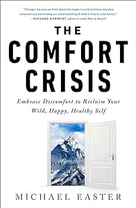

(Audio) The Comfort Crisis, by Easter
Sunday February 11, 2024
Built from Men's Health articles, Easter's book gathers tales of his hunting trips with the bros. Sometimes there are scientific and philosophical digressions. I liked how the chapter about death came at the moment between shooting and killing the wild reindeer.

Easter talks about the Fogg Behavior Model (action requires Motivation, Ability, and a Prompt) and suggests that scrolling on your phone all the time is a bad idea. Okay. He also suggests that audible white noise is caused by EM radiation in air. I struggle to find a reasonable interpretation that makes this true. There's also a good deal of "people used to do this long ago, therefore it's a good idea," which isn't necessarily wrong, but it's too easy to ignore whether there's a good argument beyond the appeal to nature.
The thesis is basically that we should get off the couch, eat healthier, and challenge ourselves. I agree, basically. I'm now listening to Rushkoff's Survival of the Richest, which has some advice which is similar in effect: Focus on the real world rather than disappearing into a technologically mediated isolation pod. Rushkoff gets there by a different path, and from his mouth it sounds like a call to a pro-social future. From Easter, it sounds like rugged individualism for reclaiming masculinity.
We're very lucky to be able to choose our level of difficulty, when we can.